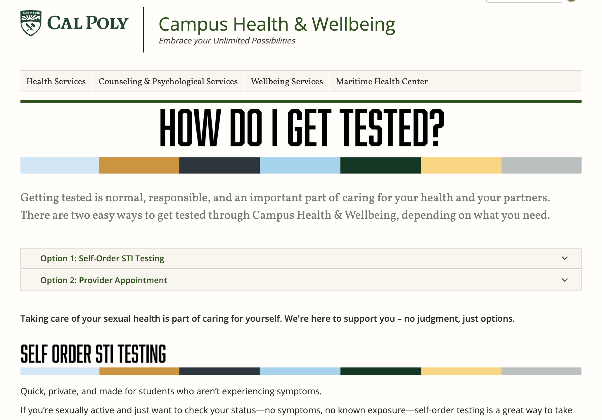
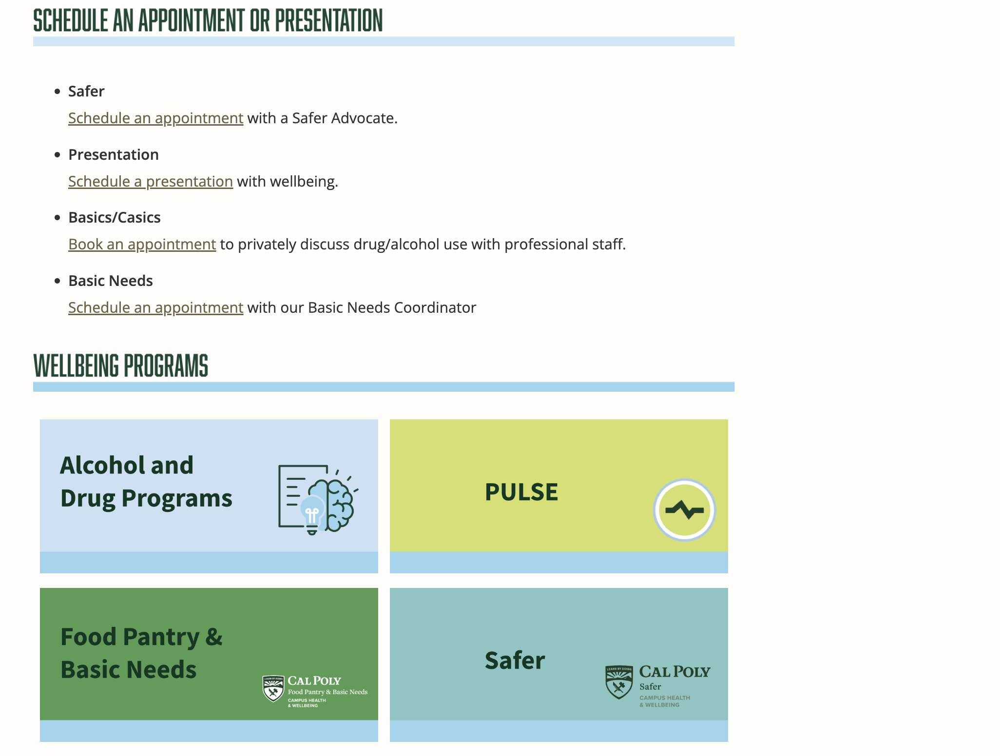
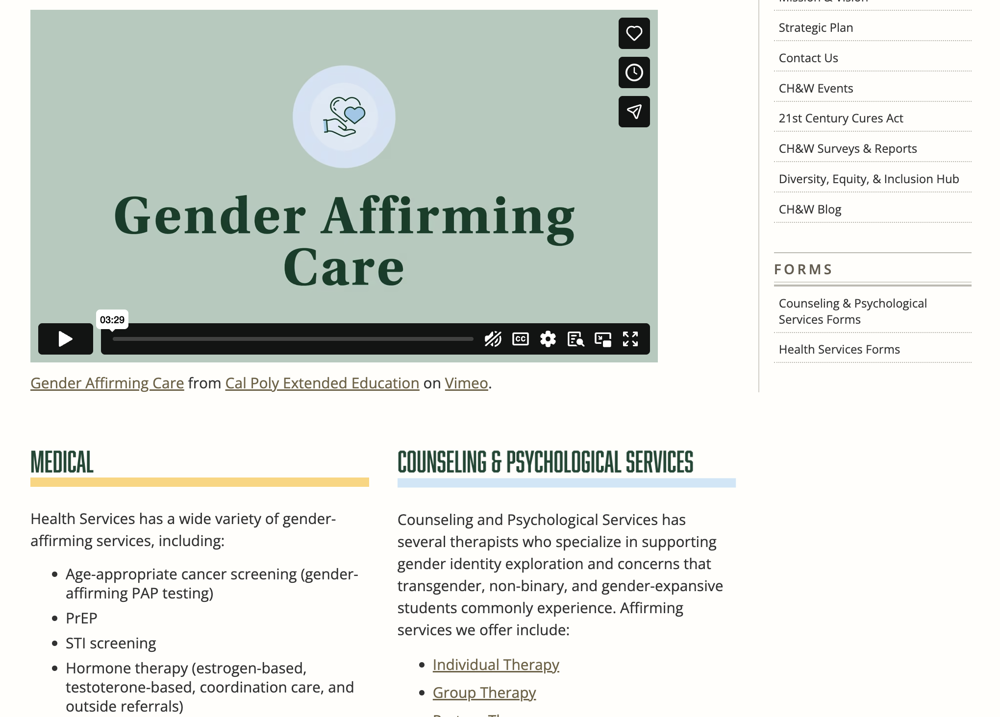

Cal Poly Health & Wellbeing · UX Designer · 2023–2025
Turning a neglected health portal into a trusted source of information.
For two years, I worked with clinicians, administrators, student teams, and campus stakeholders to improve how 23,000+ students discovered, understood, and acted on health information. The work became less about a single redesign and more about gradually rebuilding trust in a system students had stopped relying on.
A clearer, more trustworthy portal for student health information.
Before going into the research and system constraints, here is the redesigned experience students ultimately interacted with: clearer page hierarchy, more scannable content, and stronger paths to critical actions.
A closer look at the redesigned pages and interaction patterns.
1 / 3
Challenge
Students weren't using the site when they needed it most.
Cal Poly's health portal served a student population of more than 23,000, but it was averaging fewer than one engagement per student annually. For a campus health resource, that was not just a usability issue. It meant students were bypassing an official source of care information.
The site was organized around departments and internal structures, while students were arriving with urgent, task-based questions: how do I book an appointment, where do I find testing information, what do I do next?
For students
Health information felt hard to scan and difficult to trust
Critical actions were buried several clicks deep
Medical language made sensitive topics feel more intimidating
For the organization
Staff answered questions the site should have handled
Pages were difficult to maintain consistently in Drupal 7
Important services were not discoverable enough for students
Research
Understanding why students stopped trusting the portal.
Before redesigning anything, I wanted to understand why students weren't using a resource meant to support them during some of their most important health decisions.
I approached the problem from three angles: auditing the experience, analyzing behavior, and speaking directly with students.
01 · Audit
Reviewed the existing portal through the lens of a student trying to complete a task.
02 · Analytics
Checked whether the friction I saw in the interface also appeared in engagement and drop-off data.
03 · Student input
Talked to students directly about how they searched for sensitive health information.
Audit finding: dense blocks of text and unclear entry points made pages hard to scan.
Audit finding: critical actions like booking and next steps were often buried several clicks deep.
Going off-screen through in-person booths and surveys with Pulse to understand how students navigated sensitive resources like STI testing and sexual health information.
What kept showing up
Students searched by task, not department. Dense content reduced trust. And a single broken path, outdated page, or buried action was often enough for students to abandon the experience entirely.
Finding 01
Students arrived with specific goals: book an appointment, find testing information, understand symptoms, or figure out what to do next.
Finding 02
Long paragraphs, clinical language, and inconsistent formatting made health information feel harder to evaluate.
Finding 03
Trust was breaking down through small moments of friction: broken links, outdated content, and unclear next steps.
These findings shifted the project away from simply adding more content. The challenge was helping students find, understand, and act on information with greater confidence.
What I created
The redesign became a system of pages, patterns, and content decisions.
This project was not one screen. Across two years, I redesigned and implemented service pages, navigation patterns, content structures, icons, and accessibility improvements. This section shows the actual design work behind the transformation.
01 · Scannable health information
Redesigned sensitive health pages so students could quickly understand options and next steps.
For topics like STI testing, HIV testing, PrEP, and HPV prevention, dense clinical copy made the experience feel intimidating. I restructured pages around plain language, short sections, accordions, and clearer action pathways.
Rewrote and reorganized long-form content into student-facing questions
Added clearer hierarchy for prevention, testing, treatment, and follow-up
Used visual cues and iconography to make sensitive topics feel more approachable
Content DesignPlain LanguageSensitive UX

02 · Action-oriented service pages
Made critical actions easier to find before students abandoned the page.
Students often knew what they needed, but the site hid the next step. I redesigned key service pages around action-first hierarchy so booking, forms, eligibility, and support pathways were easier to identify.
Moved primary actions higher on the page
Reduced duplicate paths and unclear next steps
Created repeatable service page structures for future updates
IAService DesignConversion UX

03 · Inclusive resource discovery
Improved discoverability for resources students struggled to find.
Some of the most important content lived in buried pages or fragmented sections. I worked with stakeholders to restructure information around student needs, especially for areas like gender-affirming care and name and gender change resources.
Created clearer page groupings for gender-affirming services
Structured resources around what students were trying to do
Balanced sensitivity, clarity, and stakeholder requirements
Inclusive DesignResource DiscoveryStakeholders

04 · Consistent portal patterns
Created reusable page and component patterns inside a constrained CMS.
Because the portal had grown over time, pages felt inconsistent and difficult to maintain. I designed reusable modules, icon patterns, content structures, and implementation guidelines that made the site feel more cohesive.
Designed reusable cards, accordions, section layouts, and icon treatments
Maintained accessibility through alt text and clearer content structure
Used Figma to align stakeholders before building in Drupal
Systems DesignDrupal 7Accessibility
Execution
Designing within the system we had.
Because the site was built in Drupal 7, I could not rely on modern design system tooling or flexible components. The work became about designing practical patterns that could be implemented inside the existing CMS while still improving clarity, accessibility, and consistency.
Constraint
Limited CMS flexibility
Long-form clinical content
Small team and distributed stakeholders
Need for accessible images and proper alt text
Response
Created reusable content and layout patterns
Introduced clearer hierarchy, page sections, and accordions
Used Figma to align stakeholders before implementation
Implemented directly in Drupal with accessibility in mind
Tradeoff
I designed primarily for desktop because analytics showed 82% of users were on desktop. It was a deliberate prioritization decision based on the portal's actual usage patterns, not an assumption.
Impact
From ignored resource to trusted destination.
The redesign did not create a one-time spike. Engagement kept compounding over time. Comparing the same January–August window each year, engaged sessions grew from 20.8K pre-redesign to 207K in the first year after launch — and reached 320K by 2025.
Year 1 growth
893%
increase in engaged sessions, year over year
Behavior
60%
drop in abandonment across redesigned pages
Reach
320K
engaged sessions by 2025
System
1
foundation for future CH&W pages
Why it mattered
The portal started acting like a real source of truth. Students spent more time engaging with content, fewer users abandoned key pages, and the organization had a clearer framework for publishing health information.
Reflection
What two years of stewardship taught me.
This project taught me that trust is not built in one launch. It is built through many small moments: a clearer label, a working link, a warmer explanation, a page that actually answers the question a student arrived with.
01
Trust is built gradually. A health resource becomes reliable when every interaction reinforces that it is accurate, maintained, and useful.
02
Good content design reduces anxiety. In sensitive contexts, clear language and structure can make the next step feel less intimidating.
03
Constraints can create better systems. Drupal 7 forced me to be deliberate, reusable, and realistic about what could scale.
04
Small improvements compound over time. The biggest impact came from repeatedly improving the system, not from treating the site as a one-time redesign.